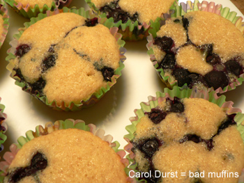
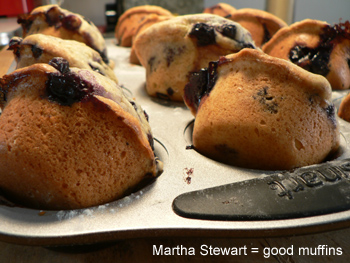

Leland conquers muffins
I’ve been on a muffin quest recently. A baking quest, really; I’ve baked more in the last month than ever before in my life. It’s freezing cold outside, and I want to take full advantage of the oven. I also find that the more you bake, the more you want to bake, because you start acquiring all of the various tools and pans and ingredients that can stop you in your tracks if you don’t have them. The number of times I’ve aborted mission over an eight-inch cake pan, a rolling pin, cocoa powder, whole wheat flour, a mixer…there’s always something. If you don’t bake regularly, and you have a phonebooth of a kitchen, you don’t want to accumulate all this stuff you’ll never use. I finally have just about everything I need for most simple baked goods. I don’t know what I’m doing all the time, but I’ve turned out a few respectable items.
Does it happen to other bakers out there that, right when you finish something and it’s good, you want to make something else while the utensils are all out and messy? That happened to me this morning, except my reason for making something else was that the first thing was inedibly awful. I’m never making anything from I Knew You Were Coming So I Baked A Cake again. When I first got the book a year or so ago, I had moderate success with some kind of coffee cake. But after the muffins she had me make yesterday, I’m through. “Everyone reaches for these muffins first,” she writes in the headnote. Sure they do—to toss them in the garbage!

For 24 muffins, this recipe used 1 stick of butter, 1 cup of sugar, 2 eggs, 1 teaspoon of vanilla, 1 cup of milk, 2 cups of flour, 1 tablespoon of baking powder, and 1 pint of blueberries. The result? Awful, grocery store–quality crap. Into the garbage they will go unless Nathan takes them to work tomorrow.
With a kitchen full of dirtied baking utensils and a heart full of despair, I turned where any self-respecting queen would: to Martha Stewart’s Baking Handbook. For 12 muffins (who needs 24 muffins anyway?), Martha had me use 1 stick of butter, 2 cups of flour, 1.5 teaspoons of baking powder, 1/2 teaspoon of salt, 2 cups of blueberries, 1 cup of sugar, 2 eggs, 2 teaspoons of vanilla, and 1/2 cup of milk.
The same amount of butter, flour, and sugar in half the amount of muffins results in muffiny perfection:

There they turned on their sides after cooling in the rack for ten minutes. I used to be afraid of Martha’s recipes because they seemed too advanced. Some of them still scare me, but I’m ready to dip my floury toes in this book. It’s full of delicious things like spicy biscuits with smoked paprika and brown sugar pound cake.
These muffins are excellent both warm and eleven hours (and four muffins) later at room temperature.
Martha Stewart’s blueberry muffins
1 stick butter
2 cups flour
1.5 teaspoons baking powder
1/2 teaspoon salt
2 cups blueberries
1 cup sugar
2 eggs
2 teaspoons vanilla
1/2 cup milk
Preheat the oven to 375ºF. Butter and flour a 12-cup muffin tin. Whisk together the flour, baking powder, and salt. Toss the blueberries (I used frozen) in a bit of the flour mixture to dredge them—this keeps them from sinking.
Beat the butter and sugar until light and fluffy. Add the eggs one at a time and and beat until combined. Mix in the vanilla.
With the mixer on low, add the flour and beat until just combined. Beat in the milk until just combined—do not overmix. Fold in the blueberries with a rubber spatula, and divide the batter evenly in the pan. Sprinkle the tops with a bit of granulated sugar if desired.
Bake for 30 minutes, rotating halfway through. A toothpick should come out clean. Let cool 10 minutes, and then turn the muffins on their sides in the pan to cool a bit more. Serve warm.
Comments
oooh they look beautiful! it’s amazing how different they look.
btw, i cooked a fish this wknd that was delicious, but i have no idea what it was. my mother brought me to the korean grocery store and said here, take this. and i salted and broiled it. i took a picture, i’m going to have to send it to you tomorrow – help me figure out what it was! :P (sorry for the personal aside in your comments section.)
I really dislike specialized kitchen equipment. Sometimes I go for long, long periods where the only thing I bake is Fanny Farmer’s scones . . . which I recommend to you, very plain, very luxe, no official sugar. So you can do a lot of things with them, sweet, fruity, with savory things. The recipe is in Lindy’s “Something for Nothing” round-up and at my blog somewhere and in your mother’s Fannie Farmer cookbook!
With the success of vegan chocolate cake and lamb stew, we’re thinking of hanging your picture above our stove.
I have had good luck with the recipe from Cook’s Illustrated, but in general I like my muffins a little less sweet, especially blueberry muffins. Bakeries always seem to oversweeten those in particular.
Cook’s does recommend creaming the butter and sugar, versus using melted butter or oil, like you do here. Meaning, you creamed the butter and sugar, not melted the butter; sometimes called the quick bread method.
I have the Fanny Farmer Baking Book and everything I’ve ever baked in it is delicious. Most are not too complicated. There are even recipes for crackers and homemade dog biscuits in it! Anyway, you’re second batch of muffins looks delish!
I have made the crackers in the Fanny Farmer Baking Book and they are wonderful! Homemade crackers are to store-bought as day is to night. They are really worth trying at least once.
Are you guys reading “Food and Paper” yet? New-Pittsburgher writes a nice food blog, just posted on homemade crackers.
That said, I made homemade crackers via Julia Child once, when I had too much (!!??) Camembert in the house and I thought to myself, when all was said and done, “Homemade cheeze-its!? Why have I just created homemade cheeze-its?!”
Add a comment